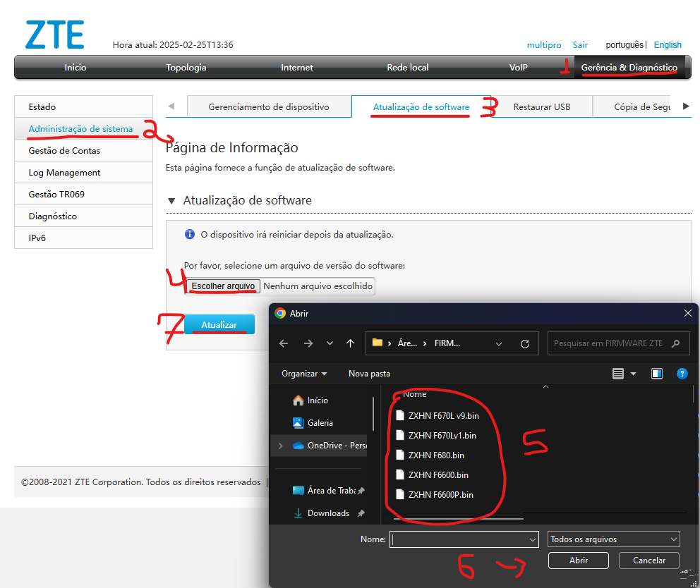
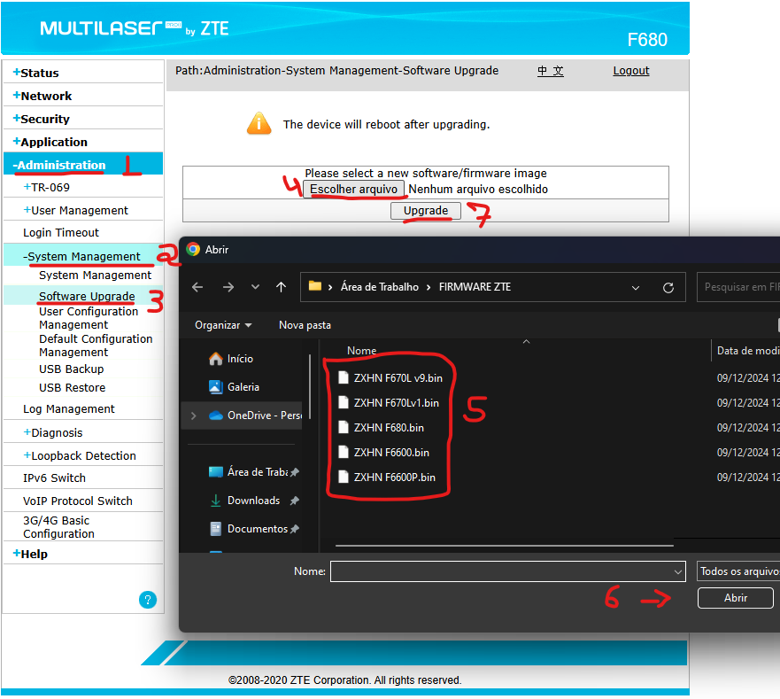

Atualização de Firmware - CAT | TrixNet
Oque é Firmware ?
Firmware é um tipo de software que está embutido em um hardware para controlar seu funcionamento. Ele atua como um intermediário entre o hardware e o software do sistema operacional, fornecendo as instruções básicas para o funcionamento do dispositivo.
Passo a passo de como atualizar a firmware F6600 (Interface cinza)
Para acessar o atualizador de firmware na ONU cinza, segue abaixo:
1. Acessar Gerência & Diagnóstico
2. Acessar Administração de Sismtea
3. Acessar Atualização de software
4. Clique em Escolher arquivo
5. Escolha o arquivo referente a ONU
6. Clique em Abrir após selecionar a ONU correspondente
7. E Atualizar, já ira iniciar a atualização da Firmware
Passo a passo de como atualizar a firmware F680 (Interface azul)
Para acessar o atualizador de firmware na ONU azul, segue abaixo:
1. Acessar Administration
2. Acessar System Management
3. Acessar Software Upgrade
4. Clique em Escolher arquivo
5. Escolha o arquivo referente a ONU
6. Clique em Abrir após selecionar a ONU correspondente
7. E Upgrade, já ira iniciar a atualização da Firmware
⚠️ Importante
Segue abaixo os arquivos de firmware dos equipamentos da TrixNet:
ZXHN F6600: Baixar Arquivo
ZXHN F6600P: Baixar Arquivo
ZXHN F670Lv9: Baixar Arquivo
ZXHN F670Lv1: Baixar Arquivo
ZXHN F680: Baixar Arquivo